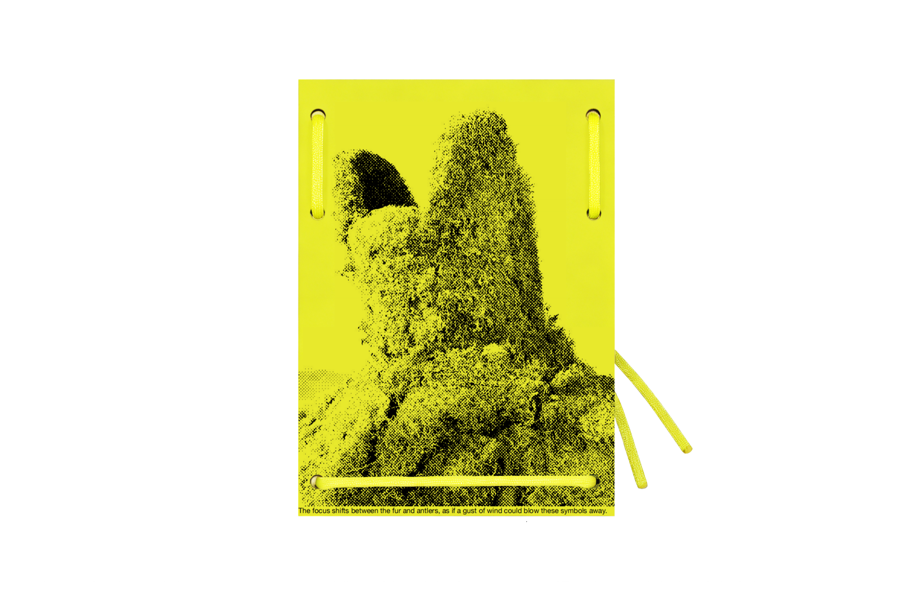
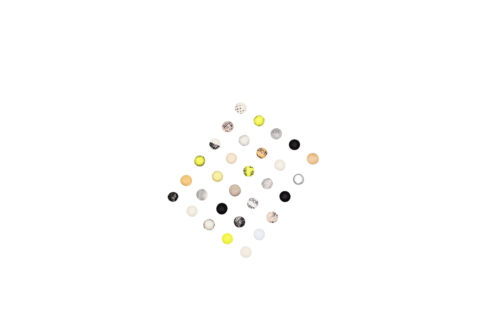
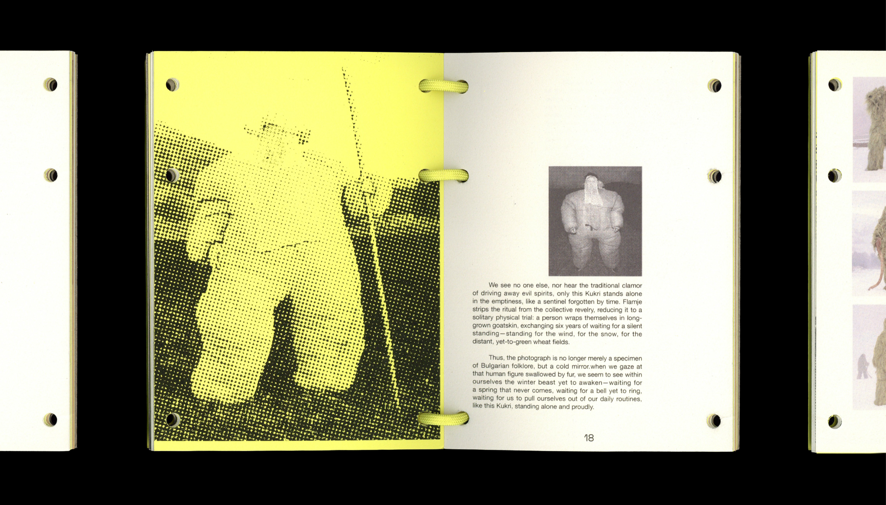
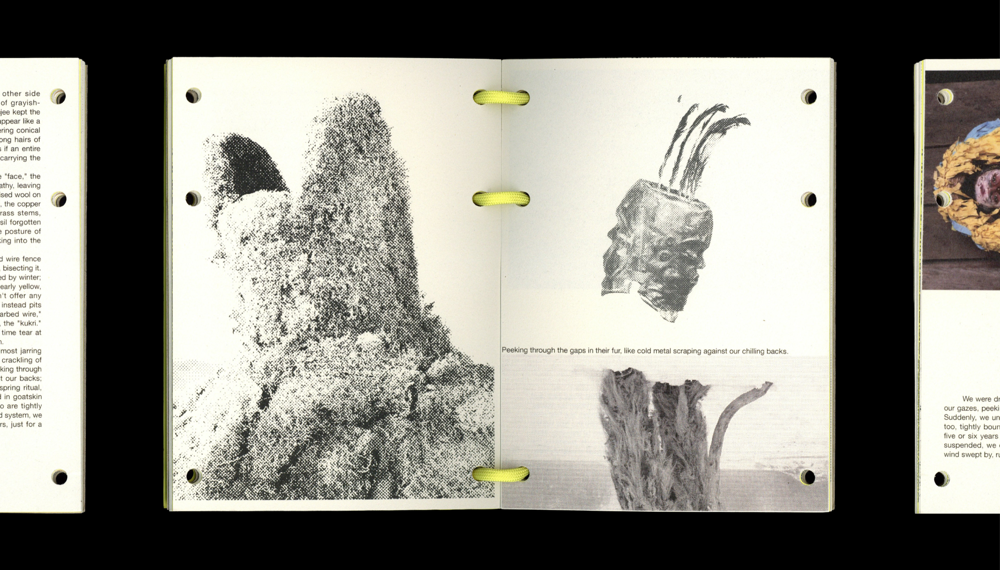
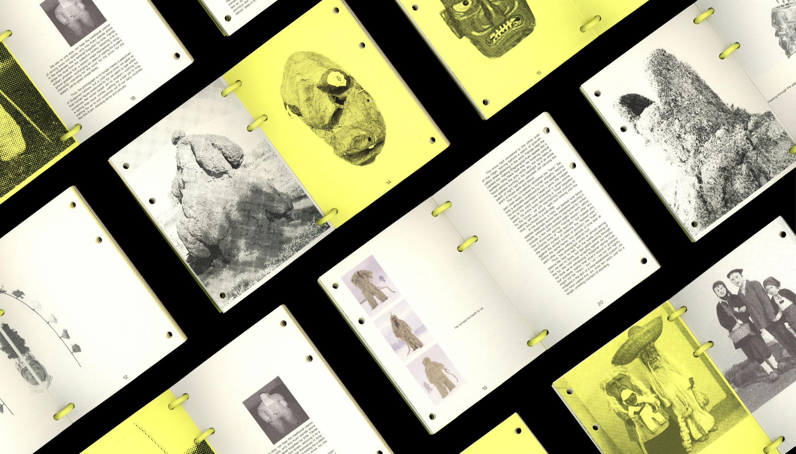
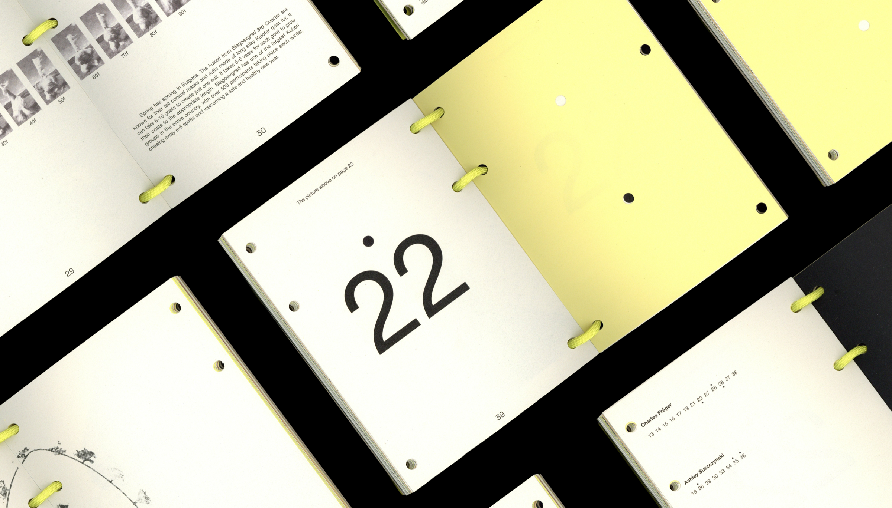
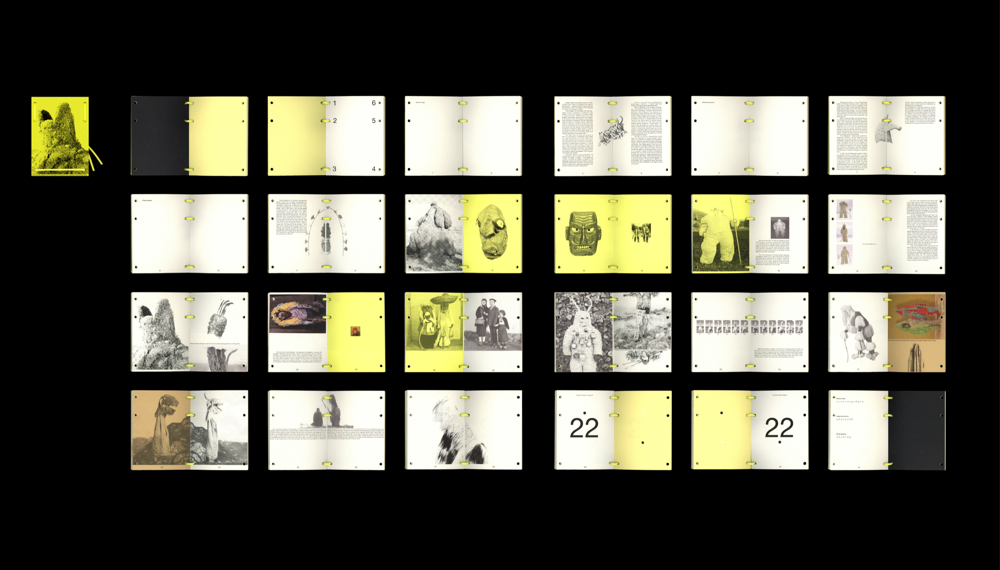

Behind The Mask
The book selects works by three mask photographers, abandoning the conventional approach of archiving by author. Instead, it dissects the masks captured by the lens into their outlines, cuts, hues, and uses. Inspired by masks, the book's design perforated and threaded is like a new mask. The book's body is hollowed out; the holes are pupils, and also riddles. The thread brushes across the paper fibers, bending, turning, and catching the light before turning the pages; the perspective becomes the unlocking action. Each page's cut is a calibration, refocusing scattered color dots until the last index line is pulled back, and the holes reappear. They are not decorations, but the answer to the riddle itself. Masks and books are mirror images of each other; seeing and being seen occur simultaneously.
选择三位面具摄影师的作品，放弃按作者归档的惯性，把镜头下的面具拆成轮廓、切口、色相、用途。装帧以面具为灵感，打孔，穿线，犹如一张新的面具，书体被凿空，孔洞是瞳孔，也是谜面。穿线掠过纸纤维，在翻阅之前俯身、侧转、迎光，视角成为解锁动作。每一页切口都是一次校准，把散落的色点重新对焦，直到最后一条索引线被拉回，孔洞再次显形，它们不是装饰，而是谜底本身。面具与书互为镜像，观看与被观看同时发生。
- CL
- YU Quan，Yee Ting
- CT
- Brand
- DE
- CCC
- AD
- CCC






More Works
Θ=1/0
Otowotto
Gene Gallery
Lemaire
Soma APP
Circle
Grand Tour
META（PHYSICAL）FORM
K2 Track Art Museum
Double Art Festival
Disappearance & Daily
Making Inbetween
Perceptual Bias
Behind The Mask
Natural Walk
Cruise Ship 72 Changes
Wandering Here Dre-
aming There
Monosci Font
24-960
A World On Paper
Golden Bell Laureates
Poetics Of Form
8th Annual Conference